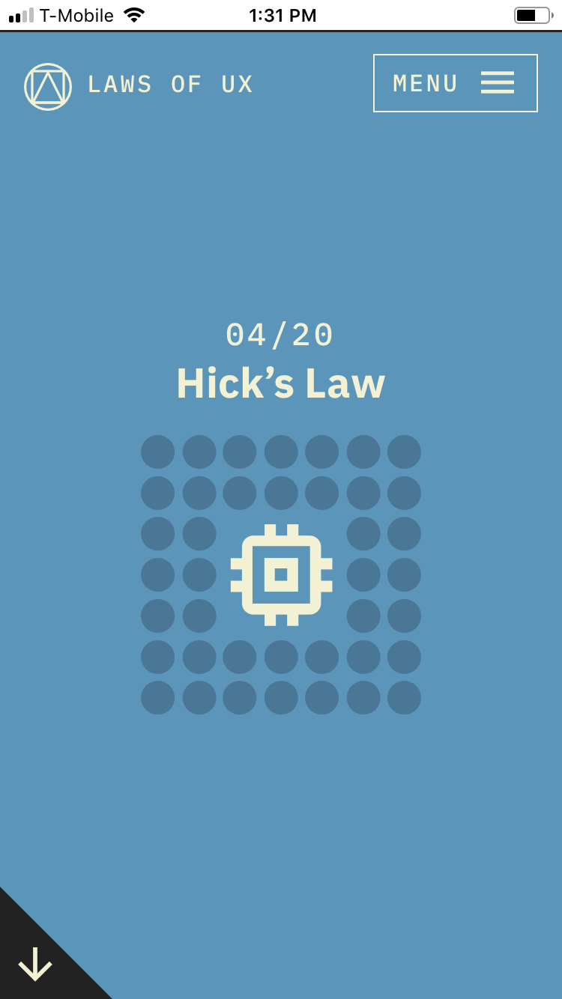

PARC: Repitition
Little Caesars
Little Caesars websiteI think that little caesars has a good design principle for repetition. Repetition is used for branding your company by its style. Little Caesars uses repition in their color scheme. The orange color that they used is repeated for every window box and even in the fonts that they use.
Visual Heiarchy
Coolors
Coolors.coCoolors shows a how visual hiearchy can be used to lead the eye to see what the creater wants you to see first. On this front page the hiearchy of the line "The super fast color scheme generator!" is where the eye is lead first to help you simply understand what this website is about. Then your eye is lead next to the button that starts the generator where it takes you to the whole purpose of the site.
White Space
Laws of UX
Laws of UX link I found this site that explains all different types of laws for UX designs. On this page that taught me more about Hick's law I saw that it demonstrated very well the design principle white space. Before the page continues with the content, this clean design is nicely centered with plenty of negative space around it. This makes for a pleasing and well designed page to look at.